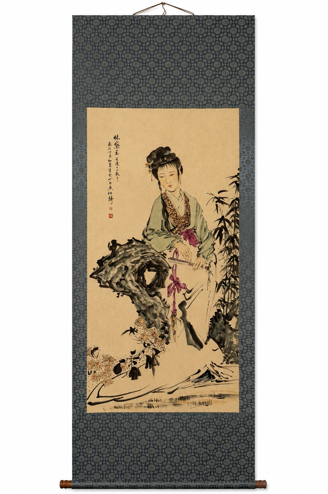

ABOUT RETRO HIYORI
中国書画を、
売るだけで終わらせない。
Retro日和は、中国書画を「知る」「選ぶ」「つなぐ」ための専門店です。作品の販売だけでなく、絵画史、画家、形式、画題の文化を一緒に届けることで、初めての方にも中国書画の入口をつくります。



OUR IDEA
知識があると、
一幅の見え方が変わる。
「この人は誰なのか」「なぜ魚を九匹描くのか」「掛軸と手巻はどう違うのか」。少し背景を知るだけで、一見同じように見えた作品が、それぞれ違う物語を持ち始めます。
そのためRetro日和では、商品ページと中国絵画史、画家事典、形式・鑑賞入門を相互につなぎます。買うためだけではなく、調べるため、学ぶためにも訪れられる場所を目指しています。
TRANSPARENCY
わからないことを、わかったように言わない。
中国書画では、作者表記と真贋、肉筆と工芸制作、伝承作と本人作など、区別が重要です。
画家名は「○○款」を基本に
作品上の表記や図様に基づく場合、画家本人の真筆であることを示す表現と混同しないようにします。
制作区分を表示
手描き・手書き作品は「肉筆」、それ以外の工芸制作は「工芸品」として整理します。
鑑定していないものは保証しない
鑑定を実施していない作品について、真筆・真作を保証する表示は行いません。掲載写真と説明をご確認いただきます。